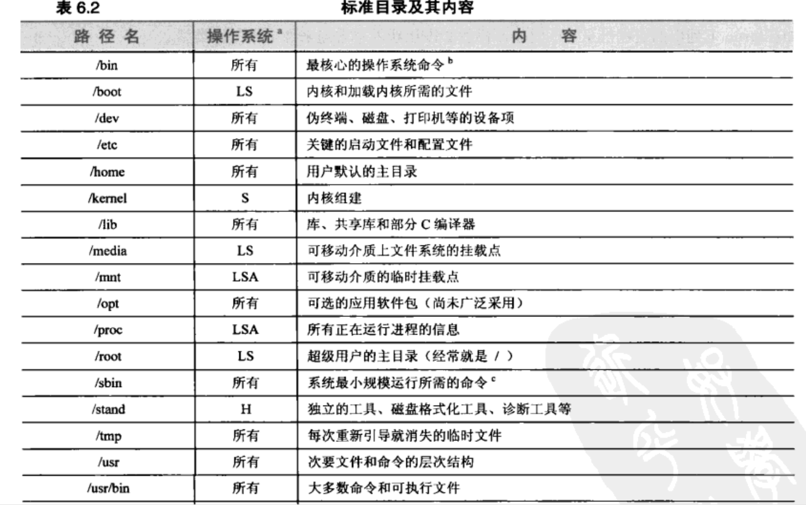
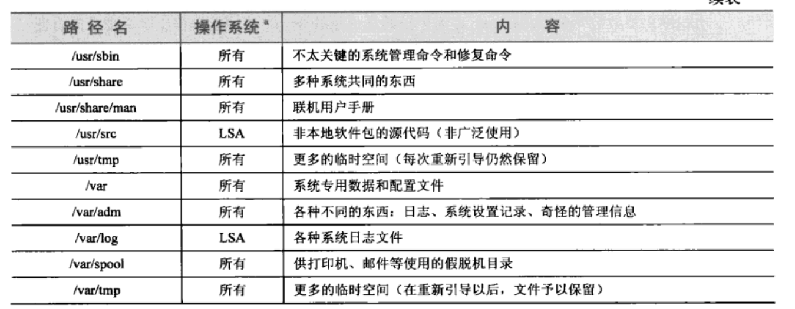

shell基础知识
|
|
引导和关机
启动脚本
- 从MRB读取引导加载程序
- 加载并初始化内核
- 检测和配置设备
- 创建内核线程
- 系统管理员干预
- 执行系统启动脚本
mount -o rw, remount /：重新挂载根目录
/etc/init.d/:能够启动或者停止各个服务。当主脚本把系统引入到一个新的运行级别时，它不是直接在/etc/init/d目录下寻找，而是查找/etc/rc**level**.d目录下
这些目录的运行脚本都是软链接到/etc/init.d目录下的脚本，当init从低运行级向高运行级过渡时，它按照数字递增的顺序，带start参数运行所有以S开头的脚本。当init从高运行级向低运行级别过渡时，它按照数字递增的顺序，带Stop参数运行所有以K开头的脚本
访问控制和超级权限
/etc/passwd：记录用户的个数
/etc/group:记录用户组的个数
bash在登陆模式启动要读~/.bash_profile，在非登录模式则读取~/.bashrc
/etc/sudoers:这个文件列出了授权使用sudo的人以及允许他们在每台主机上运行的命令。如果提供给sudo的命令运行运行，那么sudo就提示输入这个用户自己的口令并执行命令。可以通过visudo来编辑该文件
进程控制
Unix和Linux都没有提供新进程去运行某个特定程序的系统调用，现有进程必须克隆自身去创建一个新进程，克隆出的进程能够把它正在运行的那个程序替换成另外一个不同的程序
kill pid:请求彻底终止某次执行。它期待接受该信号的进程清除自身的状态并退出。但是该命令不能够保证进程会被杀死。因为TERM信号可能会被捕获/封锁或者忽略。
设置nice值
|
|
ps命令使用
|
|
/proc目录下的进程信息文件
| 文件 | 内容 |
|---|---|
| cmd | 进程正在执行的命令或者程序 |
| cmdline | 进程的完整命令行 |
| cwd | 链到进程当前目录的符号链接 |
| environ | 进程的环境变量 |
| statm | 内存使用情况的信息 |
| exe | 链到正被执行的文件的符号链接 |
| stat | 进程的总体状态信息 |
| fd | 子目录，其中包含链到每个打开文件的描述符的链接 |
| maps | 内存映射信息（共享段/库） |
| root | 链到进程的根目录的符号链接 |
| stat | 进程的总体状态信息（ps最擅长解析这些信息） |
文件系统
|
|
挂载在某个特定系统上的文件系统清单保存在/etc/fstab文件、/etc/vfstab(Solaris)文件。当系统引导时，包含在这个文件中的信息让这些文件系统先被检查(fsck)再自动挂载到系统中
umount命令用来卸载文件系统，在大多数系统上，不能够卸载处于“busy”状态的文件系统。umount -f命令能够强制卸载一个处于忙状态的文件系统。
| 代码 | 含义 |
|---|---|
| f,o | 进程有一个为了读或者写而打开的文件 |
| c | 进程的当前目录在这个文件系统中 |
| e,t | 进程目前在执行一个文件 |
| r | 进程的根目录在这个文件系统中 |
| m,s | 进程已经映射了一个文件或者共享库 |


文件类型
文件有以下几种类型：普通文件，目录，字符设备文件，块设备文件，本地域套接字，有名管道，符号链接
|
|
硬链接和软链接的区别：硬链接时直接引用，而符号链接是通过名称来引用的。
主设备号告诉内核该文件访问哪个驱动程序，次设备号告诉驱动程序对哪个物理单元寻址。
字符设备文件让与之相关的驱动程序做它们自己的输入和输出缓冲。块设备文件由处理块数据的I/O的驱动程序使用，并要求内核为之缓冲。
setuid和setgid：让执行该命令的用户能够以该命令所有者的权限来执行。
粘滞位（/tmp）：所有的用户能够在该目录下拥有所有的权限，能够在该目录下任意创建文件，修改和删除文件，但是呢，别的用户不能够动到别人的文件
umask：分配默认的权限。默认的umask值是022，它不允许属组和其他用户有写入权限。
添加新用户
/etc/passwd:用户信息
/etc/shadow:用户密码
linux中口令加密算法及其长度限制 位置：/etc/login.defs
如果把/etc/login.defs中的DEFAULT_HOME设为no，那么就会禁止没有主目录的用户登录。
可以通过chsh命令来改变自己的shell，chfn来修改使用LDAP或者其他目录服务管理登录信息。
| 命令 | 文件名 | 设置环境 |
|---|---|---|
| bash | .bashrc .bash_profile | 设置环境变量 |
| sh | .profile | 设置搜索路径/终端类型和环境 |
| vim | .vimrc .excr | 设置vim编辑器的选项 |
|
|
磁盘管理
|
|
Linux的LVM配置过程依次为以下不同的阶段：
创建和初始化物理卷
把物理卷加入到一个卷组中
在卷组中创建逻辑卷
1234567891011121314151617181920212223创建物理卷sudo pvcreate /dev/md0创建卷组sudo vgcreate DEMO /dev/md0创建逻辑卷sudo lvcreate -L 100G -n web1 DEMO创建文件系统sudo mkfs /dev/DEMO/web1挂载sudo mkdir /mnt/web1sudo mount /dev/DEMO/web1 /mnt/web1创建快照（创建快照最好跟数据一样大)sudo lvcreate -L 100G -s -n web1-snap DEMO/web1给逻辑卷增加空间sudo umount /mnt/web1sudo lvchange -an DEMO/web1sudo lvresize -L +10G DEMo/web1sudo lvchange -ay DEMO/web1改变文件系统的大小sudo e2fsck -f /dev/DEMO/web1sudo resize2fs /dev/DEMO/web1将ext2文件系统转为ext4文件系统tune2fs -j /dev/hda4
文件系统
mkfs：格式化文件系统
fsck：检查和修复文件系统
mount：挂载文件系统
df:核对一个文件系统的大小
|
|
周期性进程
|
|
系统的crontab在/etc/crontab文件中和/etc/cron.d目录中。
在/etc/cron.daily中的脚本每天运行一次，在/etc/cron.weekly中的脚本每周运行一次。
软件安装和管理
高级软件包管理系统
|
|
- apt-get 最重要的配置文件是/etc/apt/source.list，它告诉apt-get 到哪里去找它的软件包。规定了软件包的类型，指向一个文件/CD-ROM/HTTP服务器或者FTP服务器的URL，组件可能的清单。
- apt-mirror在/etc/apt/里放了一个叫做mirror.list的文件，在默认情况下，mirror.list包括了正在使用的Ubuntu版本的所有库。
- apt-get dist-upgrade会下载并安装已经在本地机器上安装过的任何软件包的新版本
- 默认返回yes来使用-yes选项
- apt-get –download-only自动下载任何改动过的软件包，但是不安装